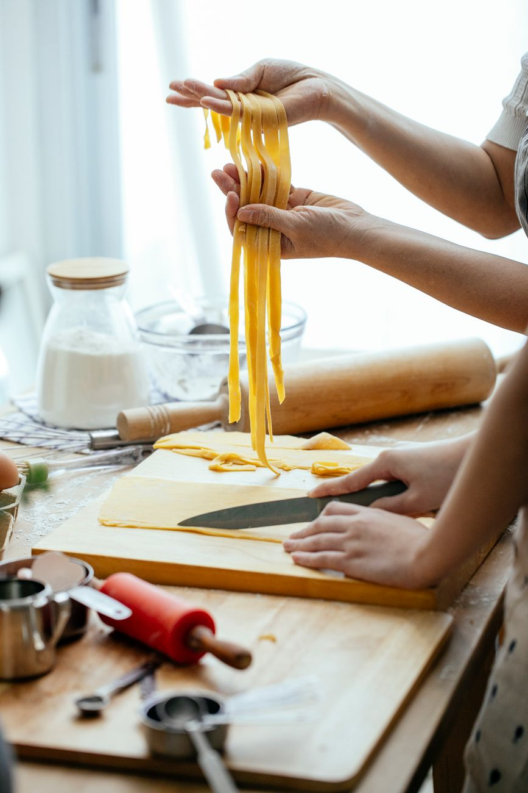

Why two kitchens
Two cooks signed one lease and neither would give up their own stove. That is the whole story, but here is the longer version — the saffron, the semolina, the charcoal, and the line we don't cross.
The origin: two cooks, one lease
Nima Farahani had been cooking Persian food in other people's restaurants for eleven years — a lot of rice, a lot of charcoal, always somebody else's menu. Giulia Bertani, who everybody calls Nonna and who is forty-one and deeply unamused by the nickname, had a pasta counter in a market hall that the landlord turned into flats.
They met the way cooks meet: at four in the afternoon, in a queue at a fishmonger's, complaining. When the unit on Fortess Road came up in 2019 it was too big for one of them and too expensive for either. So they took it together, and then spent a fortnight arguing about what the restaurant would be.
The obvious compromise was to pick one cuisine and let the other cook be a sous. The second obvious compromise was to blend the two into something with a clever name. Both of those felt like a loss. What they landed on instead was stubborn and slightly impractical: build two kitchens, cook two cuisines properly, and let the dining room do the mixing.
Five years on, the rice is still Nima's and the pasta is still Giulia's, and the only thing they share is the pass, the dishwasher and the wine list.
- Opened
- November 2019
- Kitchens
- Two, under one roof
- Seats
- 54, plus eight at the bar
- Staff
- 19 across kitchen and floor
The two kitchens in practice

Walk through the swing door and the room splits down the middle. On the left is the Persian section: a charcoal grill built into the wall, four rice pots that go on at half past four and are not touched again until service, and a cold bench for herbs — always herbs, kilos of them, tarragon and mint and dill picked by hand.
On the right is the Italian section: a gas range, a pasta boiler, a wood-fired oven that takes ninety minutes to come up to heat, and a floured bench where Giulia and Marta roll every sheet of pasta we serve. Nothing comes in dried except the paccheri, and Giulia will tell you exactly why if you ask.
The two sections have separate extraction, separate fridges and separate prep lists. They do not share pans. Charcoal smoke and butter do not want to live together, and we stopped pretending otherwise in the first month.
What they do share is the pass — one stainless steel counter, one ticket rail, one person calling. That means your table can order lamb from the grill and cacio e pepe on the same docket and they will land together, hot, at the same moment. Getting that right took about a year of shouting. It works now.
-
One ticket, two lines
Every order is printed twice, once on each side. The caller times the slower dish backwards so both kitchens plate at the same second.
-
Separate ovens, separate fuel
Charcoal on one side, wood and gas on the other. Different heats, different smells, different jobs — and no cross-contamination of flavour.
-
Shared larder, short list
Only a handful of things live in both kitchens: lemons, sea salt, olive oil, parsley, eggs. Everything else is somebody's own.
-
One dining room
No Persian side and Italian side out front. Tables order across the whole menu and most of them do.
Ingredients and suppliers
We are not precious about sourcing, but we are specific. A short list of the things that matter most, and where they come from.
Saffron
Sargol grade, all-red threads, bought twice a year from a family importer in Wembley who buys direct from growers in Khorasan. We bloom it in hot water, never oil, and we use about 180 grams a month. It is the single most expensive item we buy and there is no honest substitute, so we don't look for one.
Flour
Two sacks, two purposes. A soft type 00 from a mill in Emilia for egg pasta, and a coarse durum semolina for the shapes that need bite. The bread flour for the wood oven is milled in Hampshire and comes in on a Tuesday. Giulia blends the sourdough for the focaccia from a starter she has kept alive since 2013, which travelled here in a lunchbox.
The charcoal grill
Restaurant-grade lumpwood from British hardwood offcuts, lit at three o'clock and dying down around midnight. No gas assist, no briquettes, no lighter fluid. Lamb goes on when the coals have gone grey; chicken, marinated in yoghurt and saffron overnight, goes on a little cooler and takes its time.
Market runs
Nima drives to New Covent Garden on Tuesdays and Fridays at half past five in the morning for herbs, and to a Turkish greengrocer on the Holloway Road most other days for whatever looks better than what we ordered. Fish comes from a Billingsgate merchant on Wednesdays and Saturdays only — which is why the fish dish changes without warning and sometimes runs out by nine.
Meat is from a butcher in Smithfield we have used since we opened: whole lamb shoulders, chicken thighs on the bone, beef shin for the ragù. Vegetables that can come from a farm rather than a wholesaler do, between May and October, from two growers in Kent.
People ask what our concept is. There isn't one. There's a grill that needs feeding and a bench that needs flouring, and we do both properly.
Nima Farahani
What we don't do
This is not a fusion restaurant. We want to be plain about that, because the phrase gets attached to us regularly and it misses the point.
There is no saffron risotto on the menu — not because it would be bad, but because it would be a compromise dish that neither cook wanted to make. No tahdig lasagne. No pomegranate on the burrata. Every dish belongs entirely to one kitchen, cooked the way that kitchen cooks.
The mixing happens at your table. Order the kashk-e bademjan and the focaccia and eat them together — that is a perfectly good idea and we are glad you had it. But we are not going to have it for you and put it on a plate.
Two more things we don't do: we don't take a table for less than two hours on a Saturday, and we don't do a tasting menu. If someone asks for one we suggest six dishes off the menu and leave it there.
-
No blended dishes
Each plate comes from one kitchen, whole. The pairing is yours to make across the table, not ours to make in the pan.
-
No tasting menu
Order what you fancy. If you want guidance, ask whoever is looking after you — they eat here on their days off.
-
No shortcuts on rice or pasta
The rice is soaked, parboiled and steamed. The pasta is rolled the same day. Both take time and we've built the prep list around that.
Work with us
We're a small team and we hire slowly, but we're hiring now. Both kitchens work a four-day week on rotation, we close Mondays, and we pay above London Living Wage with service split evenly across kitchen and floor.
-
Chef de partie — Persian section
Grill and rice. Full time, four days. Experience with charcoal essential; experience with Persian cooking helpful but we will teach the rest.
-
Commis chef — Italian section
Pasta, prep and the wood oven. Full time. Suited to someone two or three years in who wants to learn to roll properly.
-
Waiter, evenings
Four or five shifts a week. You'll need to be able to talk about both menus honestly, which means eating your way through them in your first fortnight.
-
Kitchen porter, weekends
Friday and Saturday nights. Hard work, fed before service, paid weekly, and genuinely the most important job in the building.
Send us a line
No formal application form. Tell us who you are, what you've cooked or served, and when you can start. Giulia reads these on Tuesday mornings and replies to all of them.
Come and see how it works
The best explanation of two kitchens is a table for four on a Thursday with dishes arriving from both sides at once. We're on Fortess Road, Tuesday to Sunday.
Book a table Read the menu